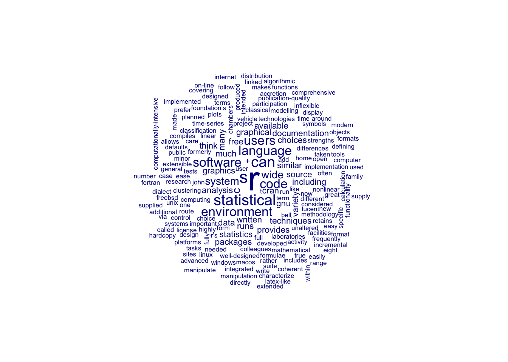

Warum R?
Was ist R überhaupt?
R is a language and environment for statistical computing and graphics.
Quelle: https://www.r-project.org/about.html
Warum sollten Geisteswissenschaftler:innen eine Programmiersprache für “statistical computing” lernen? Kann man damit nicht nur Worthäufigkeiten zählen und Wortwolken erstellen? Und sind Wortwolken nicht irgendwie etwas “underwhelming”?

In den letzten Jahren ist R neben Python zur meistgenutzten Programmiersprache im Bereich Data Science geworden. Data Scientists beschäftigen sich natürlich tatsächlich viel mit Statistik. Aber R ist viel mehr als “nur” Statistik. Die Anwendungsmöglichkeiten von R sind genauso vielfältig wie die Digital Humanities selbst. Und das nicht nur, weil die Digital Humanities selbst ein sehr vielseitiges Fach sind, über deren Definition immer noch kontrovers diskutiert wird (siehe zum Beispiel whatisdigitalhumanities.com). R hat eine aktive und riesige Community von Nutzer:innen, die immer neue sogenannte “Pakete” erstellen, die für bestimmte Anwendungen gemacht sind, wie zum Beispiel für die Analyse dramatischer Texte, die Stilometrie oder auch die Textanalyse ganz allgemein. Was man alles so mit R in den Digital Humanities anstellen kann, illustrieren die Beispiele im nächsten Abschnitt.
R Thirst Traps
Das klingt alles bisher noch sehr abstrakt. Deswegen hier ein paar ganz konkrete Anwendungsbeispiele von R im Bereich der Digital Humanities, die hoffentlich etwas Lust auf R machen:
- Web App, Geocoding, GIS, Queere Geschichte: https://www.mappingthegayguides.org/map/
Code zum Projekt: https://github.com/MappingtheGayGuides/MGG-App - Rezeptionsforschung zu James Baldwin, Literaturgeschichte, Datenvisualisierung: https://tweetsofanativeson.com/Seattle-Public-Library-2023/
Code: https://github.com/JoeLollo21/Viral-Lit-Project - Text Reuse und Intertextualität: https://americaspublicbible.org/ , https://americaspublicbible.supdigital.org/verse-viewer/?ref=Proverbs%2022%3A6
Code: https://github.com/lmullen/americas-public-bible - Text Reuse in historischen Zeitschriften, Topic Modeling, Text Feature Extraction: https://viraltexts.org/
Code: https://github.com/rccordell/us-newspapers-1689-2009 ; https://github.com/ViralTexts/viral-texts-networks ; https://github.com/jonathandfitzgerald/Viral-Texts-R - Topic Modeling: https://layeredlives.org/
Publikation zum Projekt: https://statsmaths.github.io/pdf/2022-layered-lives.pdf - Named Entity Recognition und Textannotation: https://photogrammar.org
Code: https://github.com/americanpanorama/photogrammar - Korrespondenznetzwerk analysieren und visualisieren: https://www.jessesadler.com/project/dvdm-correspondence
Code: https://github.com/jessesadler/dvdm-correspondence - Quantitative Textanalyse von Shakespeare-Dramen, Datenbeschaffung: https://m-clark.github.io/text-analysis-with-R/shakespeare.html
- Dramenanalyse, Arbeit mit XML-TEI Dateien: https://quadrama.github.io/DramaAnalysis/tutorial/3/introduction.html
Code: https://github.com/quadrama/DramaAnalysis - Datenbeschaffung mithilfe von APIs (Codebeispiel): https://github.com/ThomasK81/ExploringDigitalHumanities/blob/master/RScripts/shortstories.R
- Textklassifikation (Codesammlung): https://github.com/kbenoit/newsmap
- Quantitative Inhaltsanalyse mit R, Kookkurrenzen von Charakteren in “Sherlock Holmes”: http://inhaltsanalyse-mit-r.de/netzwerke.html
- Lexikalische Vielfalt und Sentimentanalyse (Codesammlung): https://github.com/louismagowan/lyrics_analysis
- Lexikalische Ähnlichkeit von Romanen, Computational Linguistics, Stemming
Publikation zum Projekt: https://piperlab.mcgill.ca/pdfs/Piper_NovelConversions.pdf
Code: https://github.com/nan-da/Novel-Devotions - Genreklassifikation, Topic Modeling, soziale Netzwerkanalyse, Part of Speech Tagging, uvm.
Publikation: https://press.uchicago.edu/ucp/books/book/chicago/E/bo28465405.html
Code: https://github.com/piperandrew/enumerations - Computational Linguistics, Named Entity Recognition, Part of Speech Tagging:
Publikation: https://amst.winter-verlag.de/article/AMST/2018/2/8
Code: https://github.com/nilsreiter/rereading-the-american-short-story - Quantitative Linguistik, Korpuslinguistik: https://jupyter.korpus.cz/shiny/lukes/mda/
Code: https://github.com/dlukes/shiny-mda - Digital Humanities Masterarbeit, in der R verwendet wird (Codesammlung): https://github.com/mikkosk/spectator_masters_thesis
- Noch eine Digital Humanities Masterarbeit (von mir): https://lipogg.shinyapps.io/soviet-ethnography/
Code: https://github.com/lipogg/soviet-ethnography
Im Laufe des Semesters werden wir also nicht (nur) Wordclouds erstellen, sondern genuin geistes- bzw. literaturwissenschaftlichen Fragestellungen und Technologien behandeln, die für die geisteswissenschaftliche Arbeit relevant sind. Dabei sollen programmatische Zugriffe auf diese Fragestellungen natürlich traditionelle Analysemethoden nicht ersetzen, sondern diese produktiv ergänzen.